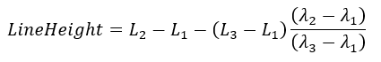
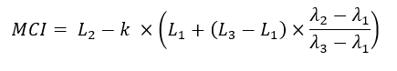

| S2 MCI Algorithm Specification |
|
The maximum chlorophyll index (MCI) algorithms exploits the height of the measurement in a certain spectral band above a baseline,
which passes through two other spectral bands.
The band combination, provided as preset, B4 (665 nm), B5 (705 nm), B6 (740 nm) (see figure 2) is best suited to compute the
MCI on Sentinel-2 MSI data. The MCI can indicate red tides or other aquatic vegetation for example.

Figure 1
The general form of a baseline algorithm is:

where the indices 1 and 3 indicate the baseline bands (B4 and B6) and index 2 the peak wavelength (B5). This algorithm is taken from the following publication:
The algorithm implemented in this S2 MCI processor contains an additional factor to correct the influence of thin clouds. This factor was introduced according to personal communications with J.F.R. Gower in February 2003.

Figure 2

Figure 3